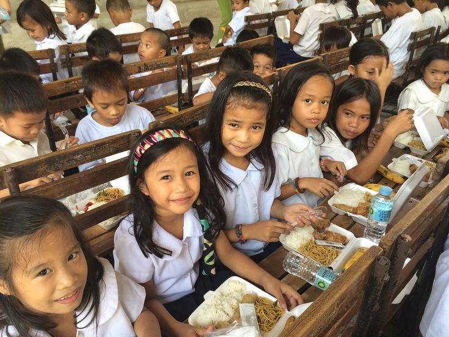
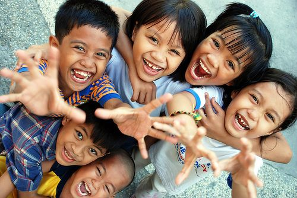

Donasi untuk meningkatkan fasilitas kesehatan di daerah terpencil dan kurang mampu. Setiap kontribusi sangat membantu dalam pembelian alat medis yang diperlukan oleh rumah sakit atau klinik, serta untuk memastikan akses kesehatan yang lebih baik bagi masyarakat di wilayah-wilayah yang sulit dijangkau. Dengan donasi Anda, kami dapat menyelamatkan lebih banyak nyawa dan memberikan perawatan medis yang layak bagi mereka yang sangat membutuhkan. Proyek ini juga mencakup pelatihan tenaga medis lokal untuk meningkatkan keterampilan mereka dalam menangani berbagai kondisi medis yang mendesak.
Donasi Pendidikan Anak Yatim
Menyediakan beasiswa untuk anak-anak yatim piatu yang kurang mampu. Pendidikan adalah kunci untuk masa depan yang lebih baik, namun banyak anak-anak yang tidak mampu melanjutkan pendidikan mereka karena keterbatasan ekonomi. Donasi Anda akan digunakan untuk membayar biaya sekolah, membeli buku, alat tulis, dan keperluan lainnya untuk membantu mereka mengejar cita-cita mereka. Dengan memberikan kesempatan belajar kepada mereka, Anda memberikan harapan dan membuka pintu masa depan yang lebih cerah. Kami percaya bahwa setiap anak berhak mendapatkan pendidikan yang layak.
Bantuan Bencana Alam
Setiap tahun, bencana alam seperti gempa bumi, banjir, dan tanah longsor terjadi di berbagai belahan dunia. Korban bencana alam seringkali kehilangan rumah, harta benda, bahkan nyawa. Donasi Anda akan digunakan untuk memberikan bantuan darurat kepada korban bencana, termasuk pengiriman makanan, pakaian, obat-obatan, dan kebutuhan dasar lainnya. Kami juga berfokus pada pemulihan jangka panjang dengan menyediakan tempat tinggal sementara dan membantu mereka membangun kembali kehidupan mereka setelah bencana melanda. Mari bantu mereka yang sedang berjuang untuk bertahan hidup dan memulai lagi dari awal.
Bantuan Pangan untuk Keluarga Miskin

Keluarga-keluarga yang hidup dalam garis kemiskinan sering kali kesulitan untuk memenuhi kebutuhan pangan sehari-hari. Melalui donasi ini, kita dapat memberikan paket pangan kepada keluarga-keluarga miskin di daerah-daerah yang membutuhkan. Paket pangan ini meliputi bahan makanan pokok seperti beras, minyak, sayur-mayur, dan protein hewani yang dapat mencukupi kebutuhan gizi mereka selama beberapa minggu. Dengan setiap donasi yang Anda berikan, kita dapat mengurangi kelaparan dan memastikan mereka mendapatkan makanan yang sehat dan bergizi untuk bertahan hidup.
Rehabilitasi Anak Jalanan
Anak-anak yang hidup di jalanan sering kali menghadapi risiko tinggi terhadap kekerasan, kecelakaan, dan ketidakstabilan emosional. Program rehabilitasi anak jalanan bertujuan untuk memberikan mereka perlindungan, pendidikan, dan keterampilan hidup yang diperlukan untuk keluar dari kehidupan jalanan. Donasi Anda akan digunakan untuk menyediakan tempat penampungan, pelatihan keterampilan, pendidikan dasar, dan bimbingan psikologis bagi anak-anak yang membutuhkan. Dengan memberikan mereka kesempatan untuk memulai kehidupan yang lebih baik, kita dapat mencegah mereka terjebak dalam lingkaran kemiskinan dan kekerasan.
Bantuan Sumber Daya Air Bersih

Akses terhadap air bersih adalah kebutuhan dasar yang sangat penting untuk kesehatan manusia. Namun, masih banyak daerah di dunia ini yang kesulitan mendapatkan sumber daya air yang bersih dan aman. Program ini bertujuan untuk menyediakan akses air bersih di daerah-daerah yang kekurangan, dengan membangun sumur, instalasi penyaringan air, dan sistem distribusi yang memadai. Donasi Anda akan membantu kami memastikan bahwa setiap individu dapat memiliki akses yang layak ke air bersih, yang sangat penting untuk mencegah penyakit dan meningkatkan kualitas hidup mereka.
Donasi Perlindungan Anak
Perlindungan anak adalah salah satu komponen penting dalam gerakan kemanusiaan, terutama di negara-negara berkembang dan daerah yang dilanda konflik atau bencana alam. Anak-anak adalah kelompok yang paling rentan terhadap eksploitasi, kekerasan, dan pengabaian, dan karena itu, sangat penting bagi masyarakat dan lembaga kemanusiaan untuk mengambil langkah-langkah untuk melindungi hak-hak mereka. Perlindungan anak tidak hanya melibatkan perlindungan fisik, tetapi juga mencakup hak atas pendidikan, kesehatan, dan kesejahteraan emosional.